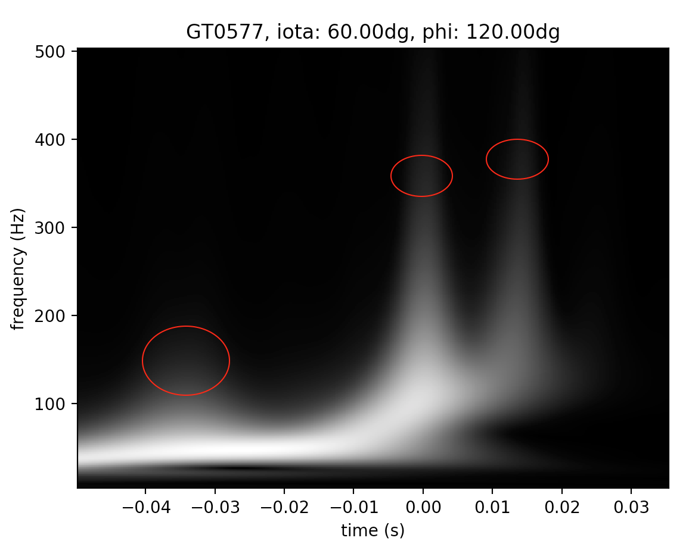
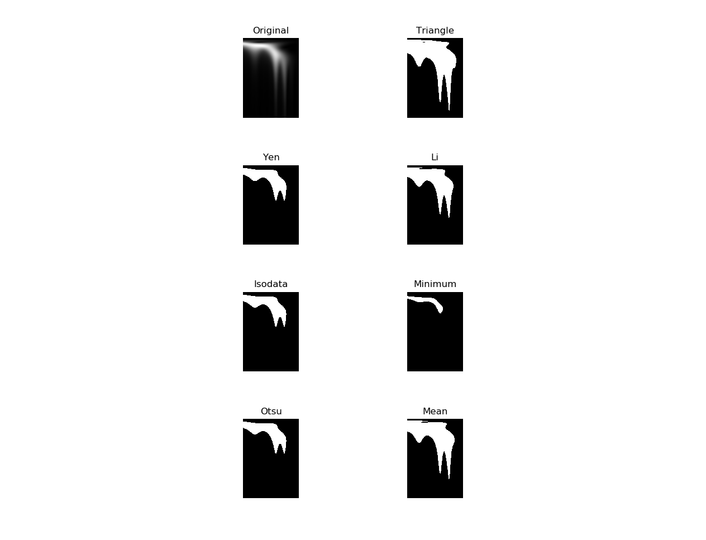
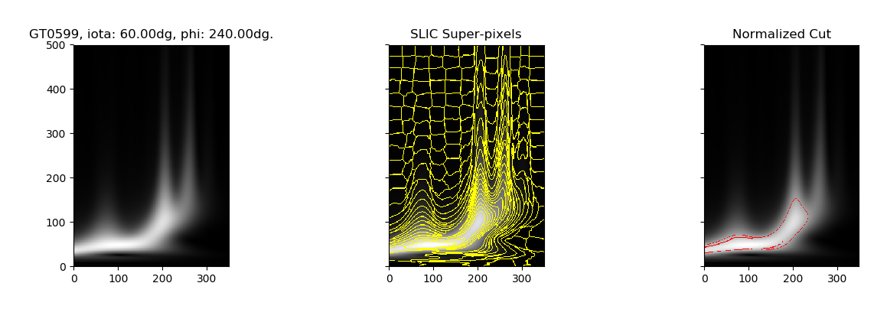
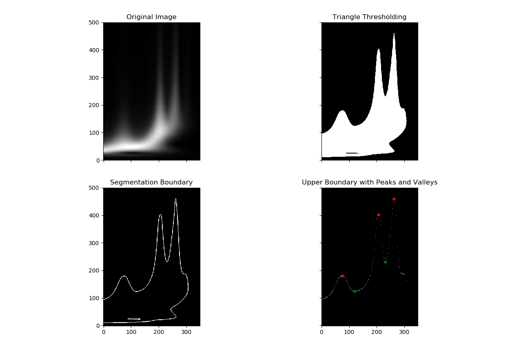
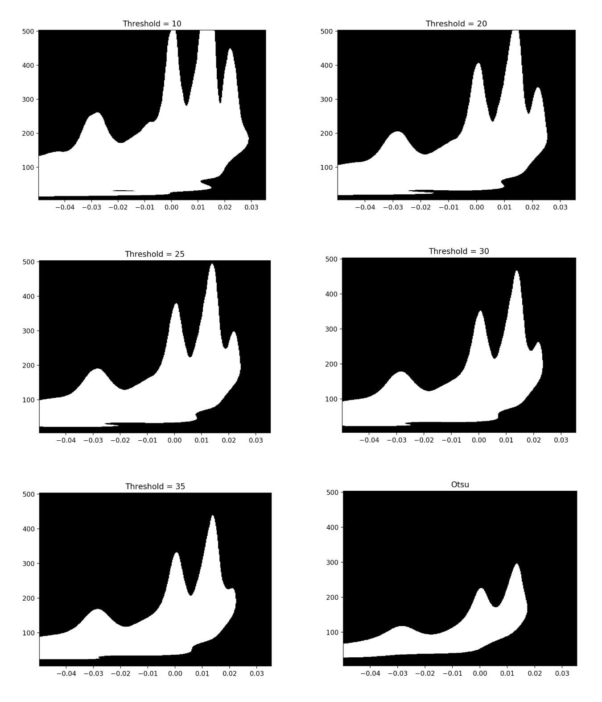
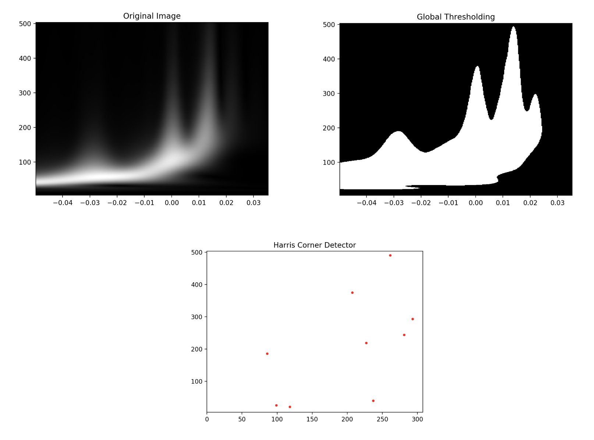
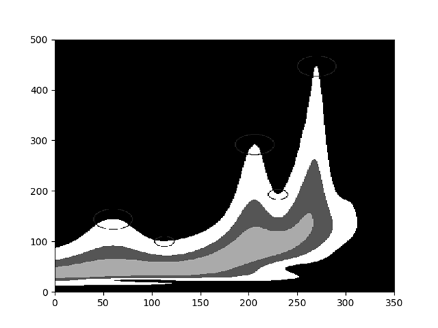
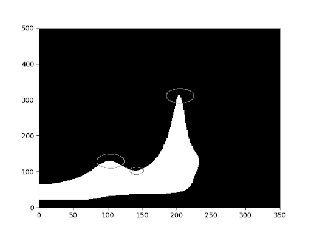

The high-frequency-high-amplitude features (called chirps) present in these time-frequency maps of gravitational waves provide supporting evidence to the unproven theory that gravitational waves carry linear momentum. In this project, we aim to devise and implement methods that are able to automatically summarize (predict) the chirp features of an input time-frequency map.
Teaser Figure
Introduction
Background and Motivation
On September 14, 2015, the Laser Interferometer Gravitational-Wave Observatory (LIGO) detected gravitational waves directly for the first time in human history. This will certainly be considered one of the most significant events in the 21st century, since it marks the beginning of an era that humans can not only “see” the universe through electromagnetic waves but also “hear” the universe through gravitational waves!
The problem is that Einstein’s general relativity predicts that gravitational waves carry linear momentum, but we have no evidence of this effect yet. Fortunately, the amount of net linear momentum carried by the gravitational wave emitted by coalescing binary black holes can be inferred from the recoil velocity (or kick) of the merged final black hole. If we can observe such a kick, it would provide evidence that gravitational waves carry linear momentum.
The existence of such a kick is closely related to the high-intensity, high-frequency features (called chirps) in the time-frequency maps of gravitational waves, as shown in Figure 1.

Figure 1: A sample time-frequency map of simulated gravitational wave. The chirps are marked out by red circles.
For practical reasons, we want to first study the chirp features on the gravitational waveforms produced by numerical relativity simulations of binary black holes. With a large number of time-frequency maps that are potentially interesting to a researcher, it will be beneficial to use computer vision algorithms to automatically process and label these time-frequency maps with respect to their chirp features. Such a tool will be very helpful for researchers to select the time-frequency maps with the chirp features of their interest, or to classify a large number of time-frequency maps based on their chirp features. Therefore, the goal of our project is to apply techniques of computer vision to automatically label these time-frequency maps in terms of the chirp features.
Approach
Problem Defined
The inputs to our system are time-frequency maps that are generated from raw waveform data in the format of HDF5 files produced by numerical relativity simulations.These raw waveform data were produced by the numerical relativity group at Georgia Tech and are publicly available at http://www.einstein.gatech.edu/table/. The process that generates these input time-frequency maps from the raw waveform data was carried out by one of our team members who is currently involved in research of the Georgia Tech numerical relativity group.
Specifically, the inputs to our system are time-frequency maps of simulated gravitational waves at a specific time window around the merger time (defined at t=0 sec) of binary black holes. The time window is approximately (-0.050 sec, 0.035 sec) since physically we are only interested in chirps within this domain. Each time-frequency map input will consist of a 2-D intensity array of 500 rows and 350 columns, a 1-D time array of 350 elements, and a 1-D frequency array of 500 elements. The time array and the frequency array define the coordinates of the intensity array. The elements of the intensity array have dimensionless values between 0 and 1; those of the time array have monotonically increasing values from about -0.05 sec to 0.035 sec; those of the frequency array have monotonically increasing integer values from 4 Hz to 503 Hz. Figure 1 shows such a sample input.
The output of our system is closely related to three questions that we want to answer given a time-frequency map. First, how many chirps are there in the time-frequency map? Second, what is the time of each chirp on the time-frequency map? Third, what is the approximate total intensity (you can think of it as total pixel intensity) of each chirp? Notice that physically we only care about whether a chirp is strong or weak in terms of its total intensity instead of the exact value of its total intensity. For example, two sequences of intensities, (2, 20, 22, 97) and (4, 25, 20, 83) have the same relative intensities for our purpose. Therefore, given a time-frequency map instance as the input, the output of our system will be
The number of chirps presented in this time-frequency map
The times corresponding to each identified chirp
The approximate total intensity of each chirp
This problem, in the context of physics, is a relatively new problem in the domain of gravitational wave data analysis and there are no known existing solutions specifically targeted this problem yet. Therefore, on this problem we will not be able to compare our solutions to existing ones. The team split up their approach into three different algorithms used to identify chirps and calculate relative frequency. The first approach used makes use of triangle thresholding then uses a segmentation method such as normalized cuts in order to find the boundary between the foreground and the background. The second method makes use of Harris corner detector in order to find peaks and valleys. The third method uses kmeans to segment the image into foreground and background and then finds the boundary between them.
Experiments and Results
Although our approaches to this problem are the signal processing techniques, we will still borrow the concepts of training and testing data from machine learning. We have prepared two separate sets of data -- one for developing our system (“training”) and the other for testing. Each instance of the training and test sets has the same format as the time-frequency map input described in the Problem Defined section. Each instance has been annotated manually by one of our group members in terms of
the number of chirps present
the approximate time for each chirp
Notice that we chose not to annotate the instances in terms of the total intensity of each chirp because annotating such a property by eyeballing is subject to significant errors. Also notice that we will use “annotate” to refer to the manual labelling of the training and testing instances. We will use “predict” to refer to the automatic labelling of the instances by our algorithms.
We have prepared 90 training instances and 90 testing instances, randomly sampled without replacement from an original data set of 180 annotated instances. We chose to annotate only 180 instances because such a number of instances already provide a more than comprehensive coverage of all the potential forms of chirp features. Due to random sampling, each of the training and test sets should also provide a more than comprehensive coverage of the chirp features. Besides, since we are tackling this problem with signal processing techniques instead of data-driven methods, we think the prepared training and testing sets are good enough for developing and testing our algorithms.
For the first algorithm, threshold then peak finding, experimentation was done to determine which thresholding algorithm performed best on the training data set and which segmentation algorithm performed best. Different thresholding techniques [1] are experimented with the image, as displayed in figure 2. The triangle thresholding method capture more low intensity content than the other thresholding methods. This is good because a lot of the chirps are relatively low intensity.

Figure 2: Thresholding Test
Additionally, normalized cut is experimented with the test image as a potential segmentation method. The image is first segmented into super-pixels using SLIC segmentation [2]. From the generated super-pixels, a region adjacency graph (RAG) is constructed based on the connectivity and mean intensity. Normalized cut algorithm [3] is then applied to the RAG to find a suitable segmentation of the RAG, and thereby the image. Figure 3 shows the normalized cut experiment. Despite best efforts in adjusting the parameters involved in SLIC and normalized cut, the segmentation method was not able to identify chirps as desired.

Figure 3: Normalized cut experiment
Figure 4 shows the approach taken to find the peak (chirp) and valley points of the time frequency image. It is determined that triangle thresholding is the most appropriate method for binarizing the image among the methods experimented. Therefore, image is first binarized by triangle thresholding. The boundary of the signal region is then found as the boundary of the binary segmentation. For each column in the image, an upper boundary point is isolated as the upper most boundary identified in the previous step. Finally, the peaks and valleys can be located as the local maxima and minima of the upper boundary.

Figure 4: Thresholding with peak finding
For the second algorithm, the harris corner detector algorithm, the static threshold parameter was experimentally determined. In Figure 5, global thresholding with different threshold values and Otsu thresholding are applied to the original image. Global thresholding with a threshold value of 25 out of 255 produces the optimal result. Global thresholding with a smaller thresholding value captures too many unnecessary pixels of small frequencies. Inversely, global thresholding with a larger thresholding value does not capture all the peaks. Otsu thresholding performs even worse than global thresholding with large thresholds. Figure 6 finds peaks after the global thresholding using the Harris corner detector. Each of the red dots represents a peak.

Figure 5: Global thresholding results

Figure 6: Global thresholding results
In the third algorithm, kmeans is used to quantize the image into k clusters. The cluster with the lowest intensity is assumed to be the background. The upper boundary between the foreground and background is used with a peak finding algorithm to find the peaks and valleys of the image. The results for K=2 and K=4 is shown below. In general higher values of K result in larger foregrounds which may include more peaks both real and fake. Higher values of K also result in significantly longer run times, but this can be avoided by taking a smaller sample of the image to determine clustering. Figure 7 and figure 8 show the results of the algorithm with four and two clusters respectively. Table 1 shows the results of an experiment to determine the optimal K value by testing the accuracy of the algorithm on the training set. The measure used for the accuracy was to see if the number of peaks produced by the algorithm were equal to the number of hand labeled peaks. The accuracy for all K values was still below the goal of 0.7, however much of this could be the fault of the peak finding algorithm being too sensitive or not sensitive enough for certain images.

Figure 7: Algorithm shows K=4 segmentation of foreground and background. The peak locations are marked by large circles and the valley locations are marked by small circles

Figure 8: Shows K=2 segmentation
K
Accuracy
1
0
2
0.422
3
0.444
4
0.456
5
0.4
6
0.489
7
0.356
8
0.267
Table 1: Accuracy for each K in Kmeans
Evaluation Metrics
When the training and testing instances were being annotated, some of the chirps were found to be very weak in intensity and were thus ambiguous. Subject to uncertainties, the ambiguous chirps of relatively lower intensities were usually not marked as chirps while those with relatively higher intensities were usually marked with chirps. Since these ambiguous chirps are widely present in our data set, it is estimated that about 20% - 30% of our annotated instances are subject to such ambiguity. Moreover, among the 180 instances in total, it is likely that 5-10 of them were annotated mistakenly, which accounts for about 3% - 5% of the total number of annotated instances. Since our algorithms would be able to make predictions consistent with some of the ambiguous annotations, we think a 20% of error rate of an algorithm with respect to the annotations is considered a very good outcome. Since there are no existing solutions to our problem yet, we want to be a bit conservative and use a 30% error rate, i.e. a 70% accuracy, as the rule of thumb for judging our algorithms. Specifically, we will consider an algorithm as successful based on the following criterion:
For counting the number of chirps, an accuracy of over 70%. Specifically, we want (the number of test instances whose annotated number of chirps match the algorithm’s prediction / the total number of test instances) > 70%.
For identifying the time locations of the chirps, a total accuracy of over 65% over the entire test set. Specifically, we want (the total number of correctly predicted chirp times over the test set / the total number of annotated chirps in the test set) > 65%. We define a tolerance window of 0.01 sec such that if the time position of a chirp predicted by our system deviates from the corresponding annotated time position by less than 0.01 sec, then we consider it as a correct prediction. We define such a tolerance window and a slightly looser criterion for success in this criterion than the previous one because in addition to the potential errors involved in identifying the ambiguous chirps, the manual annotation of the time positions are likely to include non-trivial error.
For identifying the total intensities of chirps, instead of using a quantitative metric, we will only evaluate it qualitatively by manually examining the predictions of the algorithm over the entire test set. If we find the prediction for a test instance generally reasonable, we will then regard the prediction of this instance as accurate. We want to achieve an accuracy rate of above 70% over the entire test set, abiding by the 70% rule of thumb.
Qualitative Results
The triangle threshold and segmentation algorithm is able to localize the peak and valley points effectively given an appropriate binarization. The current method of thresholding is not ideal, as the thresholding result does not closely follow human manual annotation.
The Harris corner detector is able to locate most peaks and valleys, but it also locates several points that are not of interest. The binary image produced by the current thresholding technique has peaks that are of similar frequencies as those in the original image, but have valleys that are of higher frequencies than those in the original image. The kmeans algorithm had good performance in binarizing images. Most of the peaks were found correctly, but there were a few cases especially where the binarized peak reaches the top of the image, that the algorithm struggled on. The valley finding algorithm also had very good performance. The relative intensity calculation has a few issues when compared to the visual checking of intensities. It seems to give much higher intensities for short wide hills than sharp peaks. This doesn’t match the ordering that the relative peak intensities would be labeled by hand.
Conclusion and Future Work
The chirp features in the time-frequency maps of gravitational waves provide useful information about whether or not the gravitational waves carry linear momentum. To study this subject, it will be very useful to develop algorithms that are able to automatically summarize (predict) the chirp features of an input time-frequency map, which defines the goal of our project.
Future steps for the triangle threshold and peak finding algorithm include improving the region identification and testing the accuracy of the algorithm in identifying the number of peaks and peak locations.
Future steps for the Harris corner detector algorithm include post-processing the points generated by the algorithm in order to filter out false positives and improve the accuracy. Testing of the algorithm can then be done to determine the accuracy of the algorithm in identifying the number of peaks and peak locations.
Future steps for the kmeans algorithm include improving the peak finding in order to improve the accuracy with which the algorithm counts the number of peaks. Improvements need to be made to the way it calculates relative intensity such that the relative intensities returned are reasonable with what a human would label. More testing can be used to determine the accuracy of the algorithm for locating peaks.
References
G. W. Zack, W. E. Rogers, and S. A. Latt, “Automatic measurement of sister chromatid exchange frequency.,” J Histochem Cytochem., vol. 25, no. 7, pp. 741–753, Jul. 1977.
R. Achanta, A. Shaji, K. Smith, A. Lucchi, P. Fua, and S. Süsstrunk, “SLIC Superpixels Compared to State-of-the-Art Superpixel Methods,” IEEE Transactions on Pattern Analysis and Machine Intelligence, vol. 34, no. 11, pp. 2274–2282, Nov. 2012.
J. Shi and J. Malik, “Normalized Cuts and Image Segmentation,” IEEE TRANSACTIONS ON PATTERN ANALYSIS AND MACHINE INTELLIGENCE, vol. 22, no. 8, p. 18, 2000.